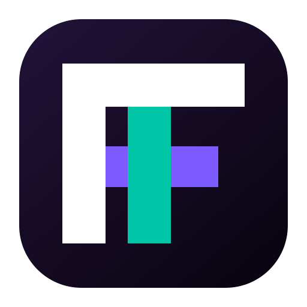
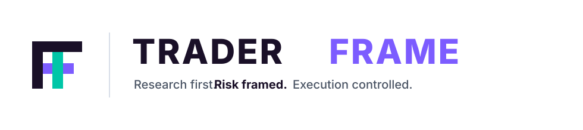
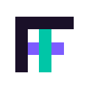
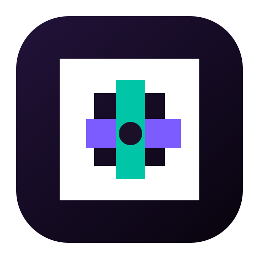
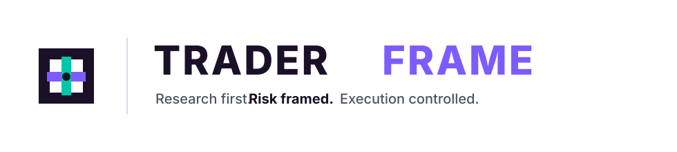
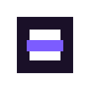
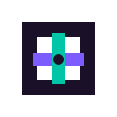

Current Direction
Framed Judgment



- Most literal TF monogram.
- Strongest as a product/app mark.
- Best balance of name recognition and control symbolism.
Three directions for the same brand promise: research the trade, frame the risk, execute only when allowed.






